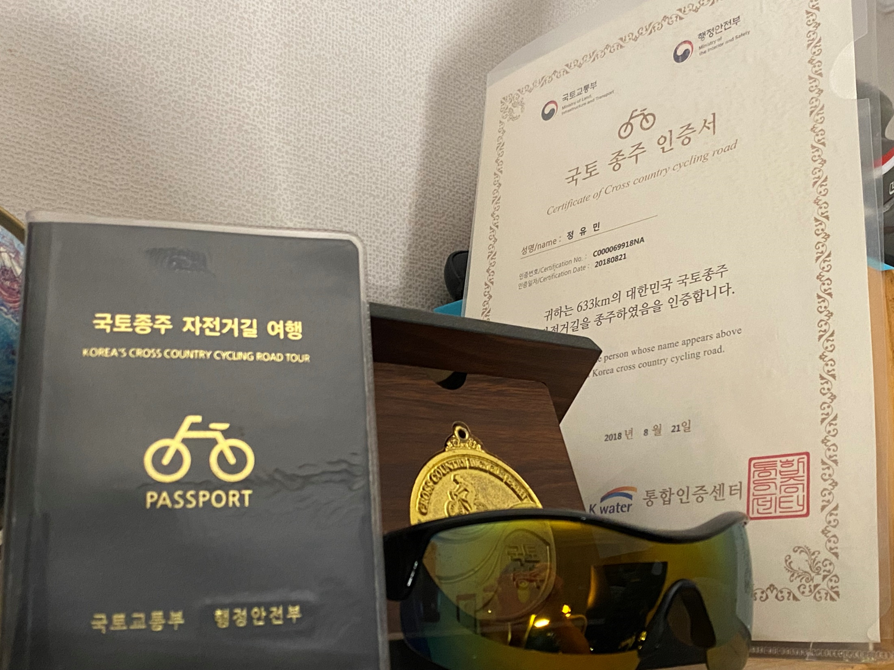

코딩
저는 다양한 프로그래밍 언어를 배우고, 새로운 기술을 탐구하는 것을 좋아합니다. 특히 웹 개발 관련된 프로젝트를 진행하는 것이 즐겁습니다.
여행
여행을 통해 새로운 문화와 사람들을 만나는 것을 좋아합니다. 자연 경관이 아름다운 곳이나 역사적인 장소를 방문하는 것을 특히 선호합니다.

자전거 타기
자전거 타기는 건강에도 좋고 스트레스를 해소하는 데 큰 도움이 됩니다. 주말마다 자전거를 타고 새로운 길을 탐험하는 것이 저의 소확행 중 하나입니다.
